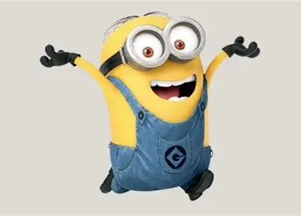

Bagladesh
Bob The Minion
Early Life:
Bob's early life as a Minion is marked by his innocence and love for teddy bears. He is known for his heterochromatic eyes and playful nature. Bob's journey with Kevin and Stuart involves them seeking a new villain master, showcasing his lucky chaos and charm
Achievements:
Bob is notable for becoming the king of England in the Minions movie, showcasing his adventurous and whimsical personality.
Minions movie link
Check the Movie Link